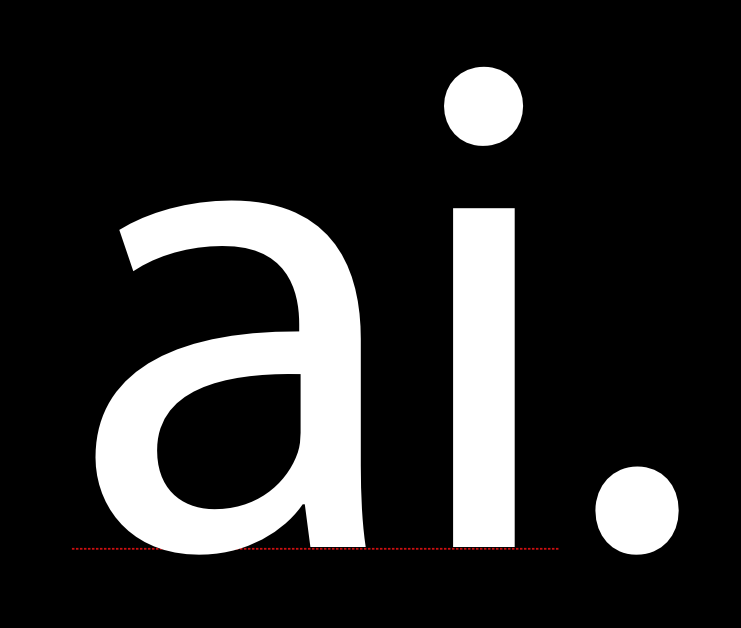
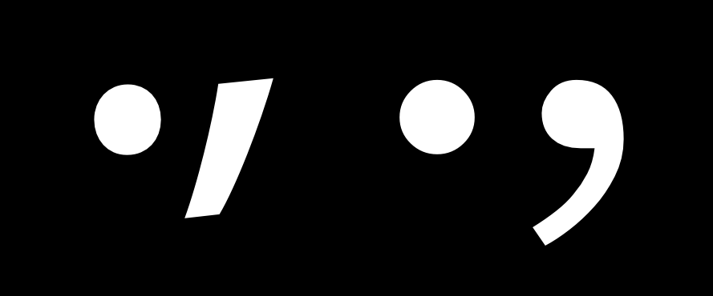
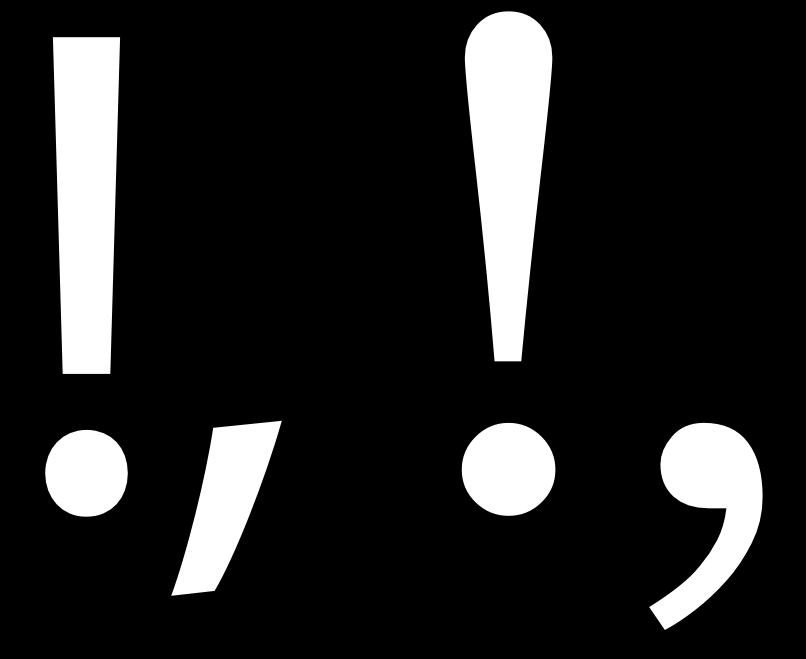
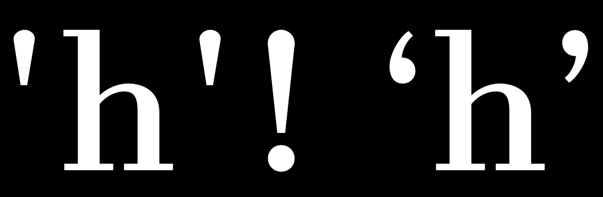
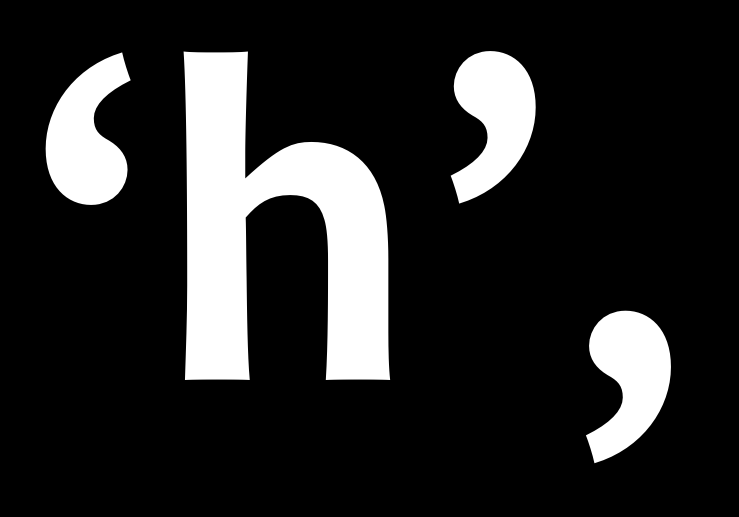

Пунктуация и Cимволы
Пунктуация и другие типографские символы имеют свою собственную историю, отдельную от развития алфавита. Но обнаружить, что по-прежнему применяется тот же процесс проектирования, включая повторное использование и адаптацию компонентных элементов, а также итеративное тестирование выбора дизайна.
Простые знаки препинания
Первое, что нужно сделать при разработке знаков препинания, — это создать символ ‘.’, который известен как точка или точка.
Форма этого глифа часто берется из точки над ‘i,’, которую иногда называют титулом. После того, как скопировать точку, сделать ее немного больше. Рекомендуется протестировать несколько разных размеров в печатном тексте или на экране.
Как только определиться с размером, который устраивает, точку можно будет использовать в качестве основы для множества других знаков пунктуации, включая следующие глифы: ; : ? ! ¡ ¿ · …

Следующий глиф, который нужно сделать, — это запятая. Форма запятой может варьироваться в удивительной степени. Возможно, будет полезно просмотреть широкий спектр вариантов дизайна запятых, прежде чем придумывать свой.
На изображении ниже показаны две наиболее распространенные формы, которые может принимать запятая.

Верхняя часть запятой часто бывает немного светлее точки, потому что, если она одинакова, она может выглядеть слишком тяжелой. На образце изображения запятая справа является хорошим примером применения этой компенсации. Еще одна распространенная ошибка, на которую следует обратить внимание при использовании этого глифа, — сделать его слишком коротким.
Когда есть запятая, будет довольно легко поставить точку с запятой (;).
Восклицательный знак и вопросительный знак
Восклицательный знак может быть обманчивым, поскольку его кажется просто сделать. Если посмотреть на различные шрифты, видно, что иногда дизайн действительно довольно прост.
Однако глиф имеет удивительные возможности для выражения дизайна. Часто даже в шрифте с очень низким контрастом полоса над точкой вверху несколько тяжелее, чем внизу. Форма восклицательного знака обычно в некоторой степени связана с расположением запятой.

Вопросительный знак также может быть довольно трудным для создания, потому что требуется, чтобы сбалансировалась разомкнутая кривая над точкой внизу.
Как и в случае с восклицательным знаком, желательно просмотреть и даже протестировать ряд различных решений, прежде чем выбрать одно для своего дизайна.

Дизайн символов c, C, G, s и S может служить некоторой основой для дизайна этого глифа, но также можно решить выбрать и другую форму.
Дополнительные символы

Простые или вертикальные кавычки — ' и " — отличаются от типографских кавычек: ‘ ’ и “ ” ‚ „ .
Простые кавычки могут повторять форму полосы над точкой восклицательного знака, но их также можно оформлять отдельно.
Обычно типографские кавычки довольно тесно связаны с запятой; однако они должны быть длиннее запятой и часто больше изогнуты.

Brackets [ ] их относительно легко сделать, потому что они имеют квадратную форму. Тем не менее, их дизайн должен отражать выбор, который сделать в остальной части шрифта.
Главный вопрос, который нужно решить, — насколько они будут высокими и глубокими. Условие заключается в том, что они должны очень немного превышать высоту прописных букв и опускаться ниже базовой линии примерно на 3/4 глубины нижнего регистра строчных букв.
Этот выбор также будет отражен в дизайне круглых скобок () и фигурных скобок {}. Вес осей всех трех этих символов должен быть меньше веса основы как заглавных, так и строчных букв.
Осторожно: при тестировании символов [ ] # в окне метрик они могут не отображаться. Это потому, что они зарезервированы программой. Вместо ввода [ ] и # ввести /bracketleft /bracketright и /numbersign.

Круглые скобки должны отражать дизайн связанных фигур, например D, C, и G.
Скобки примечательны тем, что их конструкция варьируется в большей степени. У скобок есть это общее с вопросительным знаком. Распределение веса в фигурных скобках может напоминать распределение веса чисел, поскольку иногда оно может нарушать правила, которым следует в остальной части дизайна.